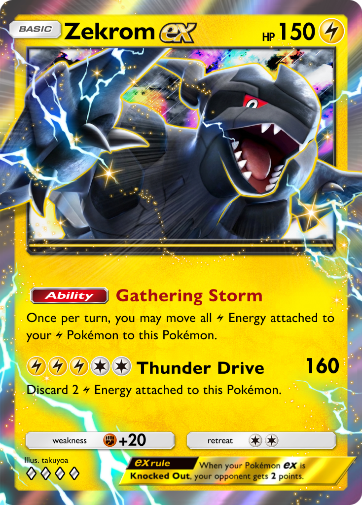
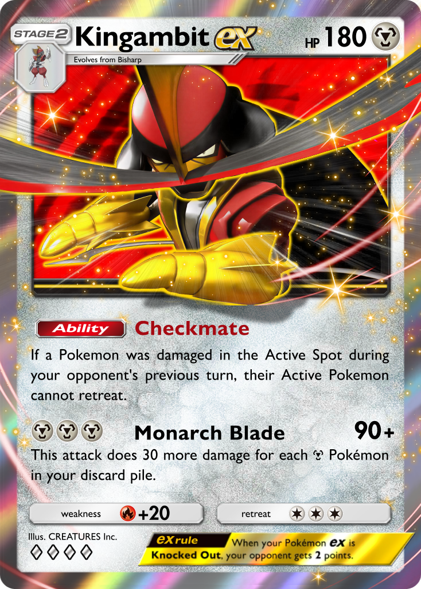
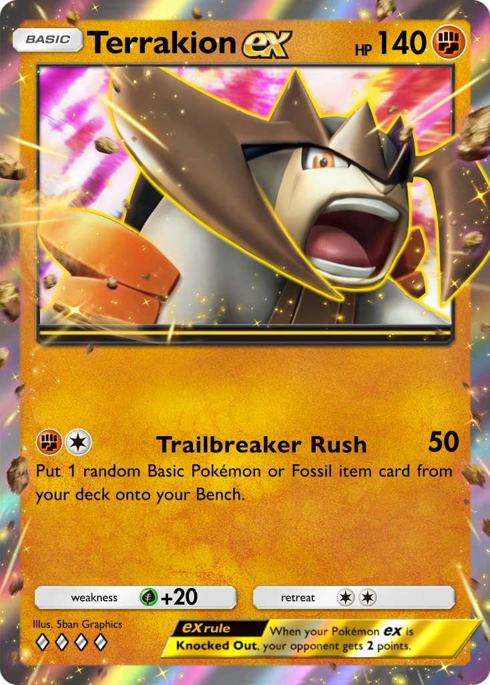
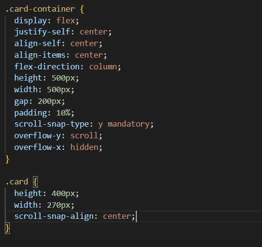
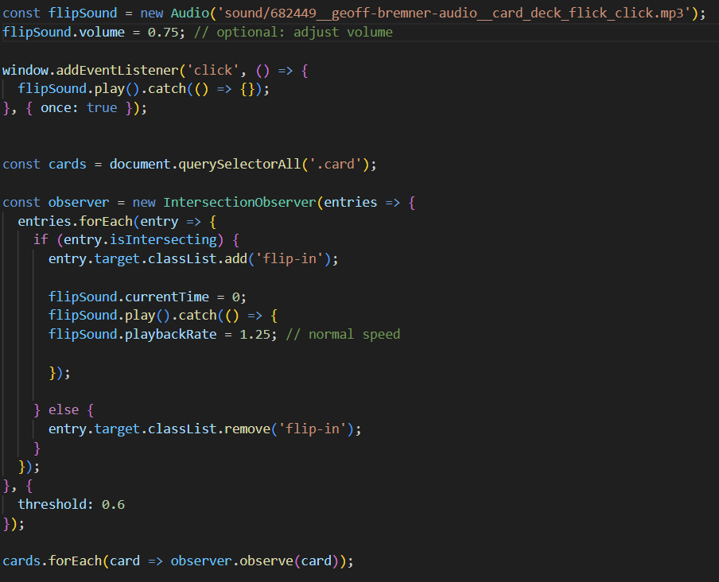

What is CSS Scroll Snap?
CSS Scroll snap is a simple tool that allows you to control scroll behavior within a container. The most basic way to apply it is to attach the property "scroll-snap-type:" to a container, allowing you to center elements as you scroll.
You would mostly use CSS scroll snap to clean up your page. If you have multiple segmented elements to your webpage, it would feel more professional to have those elements center within their containers rather than scroll freely. You may also use it as I have done here, to give emphasis to displayed elements on your webpage, almost like a carousel or gallery that you might find on a website for a retail store.
Properties
There are a few crucial properties that I found in working with CSS Scroll Snap. As stated before, "scroll-snap-type" is the core property of this tool. It controls both the direction that you are able to scroll, as well as how much snap is applied. For my demonstration, I used the values "y mandatory," forcing objects in the container to snap to the center, and allowing you to scroll in the y axis. There is also a similar value to "mandatory" called "proximity," which offers less strict snapping.
For the elements inside your container, the property "scroll-snap-align" will set the position that the element is fixed in on scroll. For instance, my example shows "scroll-snap align: center," which fixes the position of my elements to the center of their container, but you can also use "start" or "end" to fix your elements to the front or back of your container respectively. In my example, it was important to me that you don't accidentally miss one of my cards when scrolling quickly, so I added another property called "scroll-snap-stop," which forces the viewport to stop at each possible snap position. This property accepts the values "normal" and "always," the former of which is the default value and the latter forcing stops.

Javascript
"CSS Scroll Snap" isn't perfectly straightforward when it comes to scroll detection. I knew I wanted to animate the individual elements in my container on scroll, but it wasn't as simple as adding "AOS" like I originally thought it would be. If you want to detect the change in scroll position, the simplest way is to use the "scrollsnapchange" or "scrollsnapchanging" events, which detect when snapping has concluded. This also requires you to set the snap target, using "snapTargetInline" or "snapTargetBlock" properties, which report when an element is snapped into focus. I used an intersection observer to make sure my animations and sounds would play when scrolling either up to or down to an element, but it is recommended to use "scrollsnapchange" for UI updates involving a container with CSS scroll snap.
